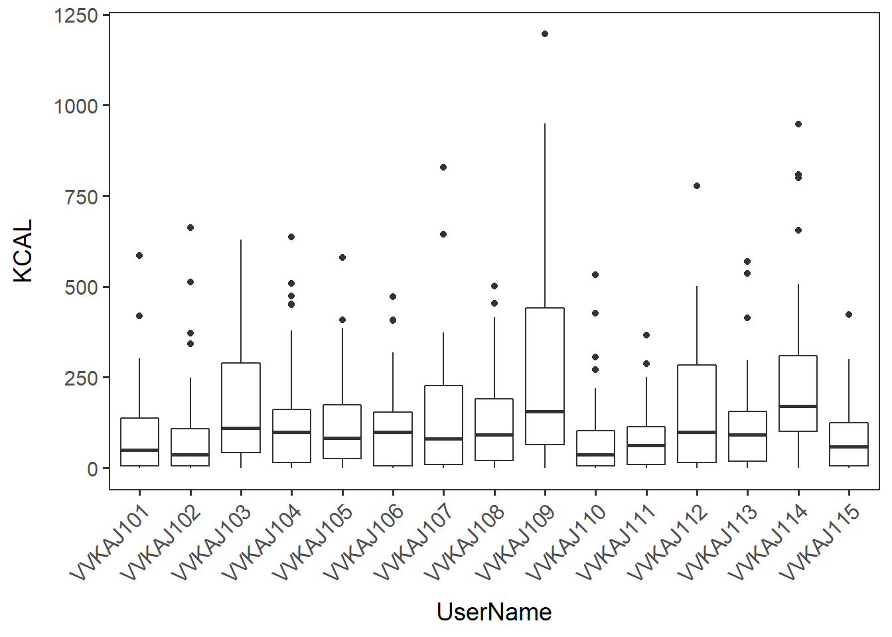
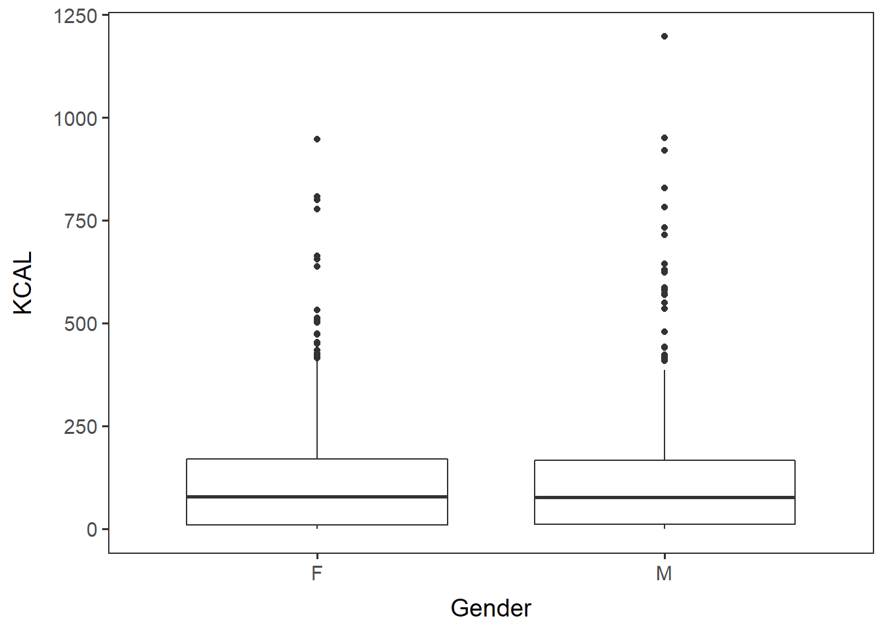
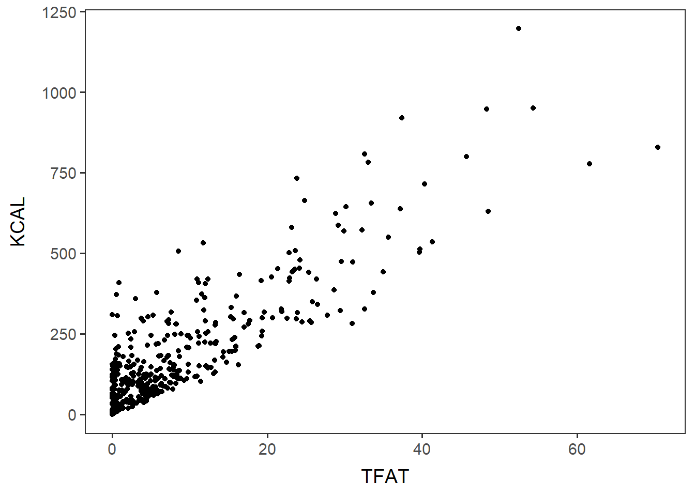
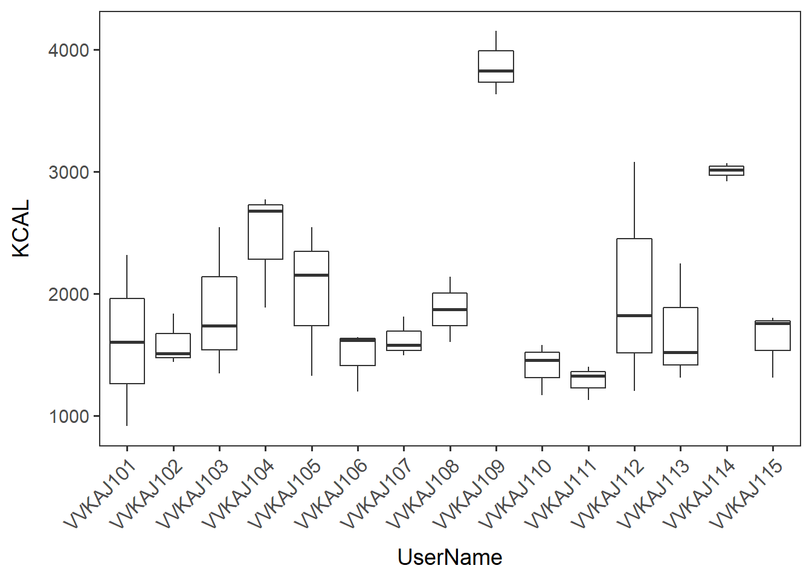
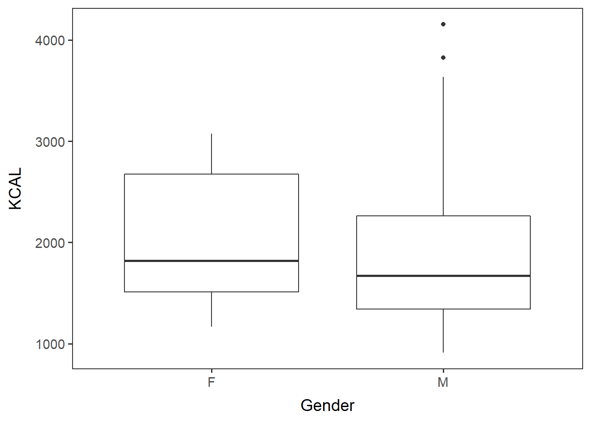
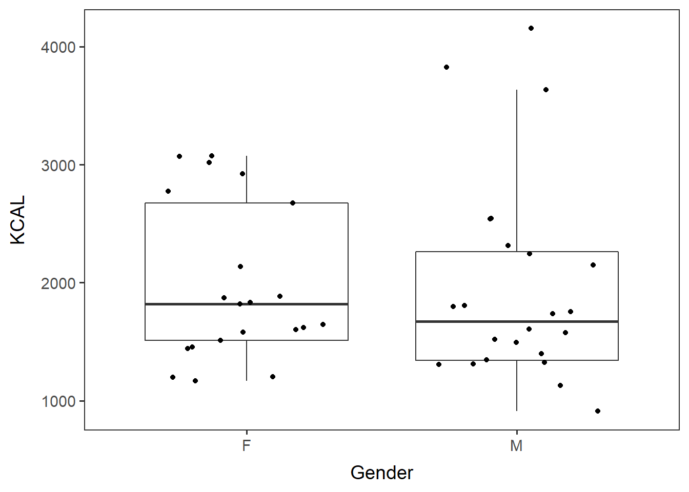
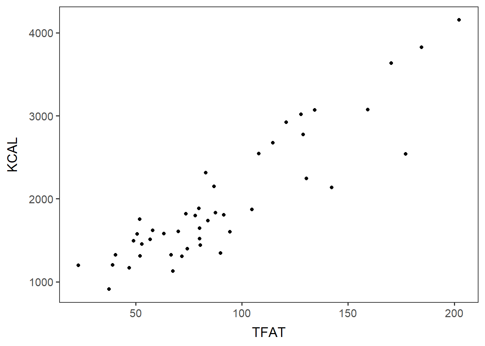
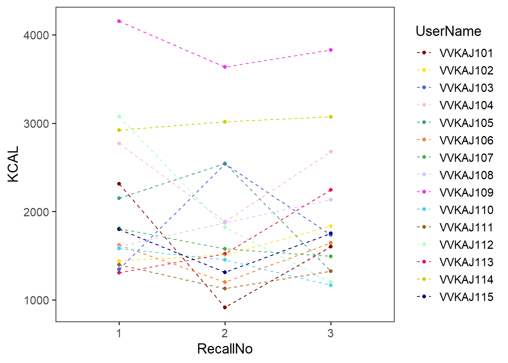

Name the path to DietR directory where input files are pulled.
main_wd <- "~/GitHub/DietR"Load the necessary functions.
source("lib/specify_data_dir.R")
source("lib/data_overview.R")
source("lib/ggplot2themes.R")Name the path to DietR directory where input files are pulled.
main_wd <- "~/GitHub/DietR"Call color palette.
distinct100colors <- readRDS("lib/distinct100colors.rda")You can come back to the main directory by:
setwd(main_wd)Specify the directory where the data is.
SpecifyDataDirectory(directory.name= "eg_data/VVKAJ/")Load your items data to be analyzed. _f_id_s_m stands for: “food names formatted”, “SampleID added”, “selected individuals”, and “metadata merged”.
items_f_id_s_m <- read.table("VVKAJ_Items_f_id_s_m.txt", sep="\t", header=T) head(items_f_id_s_m)## UserName SampleID RecallRecId
## 1 VVKAJ101 vvkaj.00001 41fee4cf-783f-469b-aadf-62c7e2cd33a9
## 2 VVKAJ101 vvkaj.00001 41fee4cf-783f-469b-aadf-62c7e2cd33a9
## 3 VVKAJ101 vvkaj.00001 41fee4cf-783f-469b-aadf-62c7e2cd33a9
## 4 VVKAJ101 vvkaj.00001 41fee4cf-783f-469b-aadf-62c7e2cd33a9
## 5 VVKAJ101 vvkaj.00001 41fee4cf-783f-469b-aadf-62c7e2cd33a9
## 6 VVKAJ101 vvkaj.00001 41fee4cf-783f-469b-aadf-62c7e2cd33a9
## UserID RecallNo RecallAttempt RecallStatus
## 1 7bd05142-312e-4648-b1ac-fc258540af52 1 0 2
## 2 7bd05142-312e-4648-b1ac-fc258540af52 1 0 2
## 3 7bd05142-312e-4648-b1ac-fc258540af52 1 0 2
## 4 7bd05142-312e-4648-b1ac-fc258540af52 1 0 2
## 5 7bd05142-312e-4648-b1ac-fc258540af52 1 0 2
## 6 7bd05142-312e-4648-b1ac-fc258540af52 1 0 2
## IntakeStartDateTime IntakeEndDateTime ReportingDate Lang Occ_No
## 1 11/5/2021 0:00 11/5/2021 23:59 11/6/2021 1 1
## 2 11/5/2021 0:00 11/5/2021 23:59 11/6/2021 1 1
## 3 11/5/2021 0:00 11/5/2021 23:59 11/6/2021 1 1
## 4 11/5/2021 0:00 11/5/2021 23:59 11/6/2021 1 1
## 5 11/5/2021 0:00 11/5/2021 23:59 11/6/2021 1 2
## 6 11/5/2021 0:00 11/5/2021 23:59 11/6/2021 1 3
## Occ_Time Occ_Name EatWith WatchTVuseComputer Location FoodNum FoodType
## 1 11/5/2021 7:00 1 NA NA 1 1 1
## 2 11/5/2021 7:00 1 NA NA 1 2 1
## 3 11/5/2021 7:00 1 NA NA 1 3 2
## 4 11/5/2021 7:00 1 NA NA 1 4 1
## 5 11/5/2021 10:00 7 NA NA 1 5 1
## 6 11/5/2021 12:00 3 NA NA 1 6 1
## FoodSrce CodeNum FoodCode ModCode HowMany SubCode PortionCode FoodAmt KCAL
## 1 NA 1 92400000 0 9.6 0 30001 297.6 124.992
## 2 NA 2 57231250 0 1.0 0 10205 104.0 419.120
## 3 NA 3 91302010 0 0.5 0 21000 10.5 31.920
## 4 NA 4 63200200 0 0.5 0 10205 98.5 50.235
## 5 NA 5 94000100 0 8.4 0 30000 252.0 0.000
## 6 NA 6 32103000 0 0.5 0 10205 111.0 285.270
## PROT TFAT CARB MOIS ALC CAFF THEO SUGR FIBE CALC
## 1 0.0000 0.7440 30.83136 265.93536 0 26.784 0 29.58144 0.0000 2.976
## 2 9.3600 10.9200 75.92000 5.40800 0 0.000 0 16.01600 10.0880 40.560
## 3 0.0315 0.0000 8.65200 1.79550 0 0.000 0 8.62260 0.0210 0.630
## 4 0.4137 0.6304 11.98745 85.29115 0 0.000 0 8.32325 2.6595 7.880
## 5 0.0000 0.0000 0.00000 251.74800 0 0.000 0 0.00000 0.0000 7.560
## 6 11.3886 25.6854 1.12110 70.99560 0 0.000 0 1.12110 0.0000 46.620
## IRON MAGN PHOS POTA SODI ZINC COPP SELE VC
## 1 0.05952 0.000 26.784 14.88 8.928 0.26784 0.020832 0.2976 0.0000
## 2 17.99200 101.920 307.840 350.48 298.480 2.39200 0.416000 43.4720 0.2080
## 3 0.04410 0.210 0.420 5.46 0.420 0.02310 0.003780 0.0840 0.0525
## 4 0.17730 4.925 10.835 53.19 0.985 0.06895 0.032505 0.0985 2.4625
## 5 0.00000 2.520 0.000 0.00 10.080 0.02520 0.025200 0.0000 0.0000
## 6 1.11000 8.880 157.620 116.55 420.690 0.96570 0.015540 27.8610 0.0000
## VB1 VB2 NIAC VB6 FOLA FA FF FDFE VB12
## 1 0.00000 0.000000 0.000000 0.000000 0.000 0.00 0.000 0.000 0.0000
## 2 0.72800 0.832000 9.984000 1.040000 199.680 179.92 19.760 326.560 3.0160
## 3 0.00000 0.003990 0.012705 0.002520 0.210 0.00 0.210 0.210 0.0000
## 4 0.03152 0.036445 0.512200 0.058115 6.895 0.00 6.895 6.895 0.0000
## 5 0.00000 0.000000 0.000000 0.000000 0.000 0.00 0.000 0.000 0.0000
## 6 0.06105 0.459540 0.056610 0.108780 39.960 0.00 39.960 39.960 1.0101
## VARA RET BCAR ACAR CRYP LYCO LZ ATOC VK CHOLE SFAT S040
## 1 0.00 0.00 0.00 0 0.00 0 0.00 0.0000 0.000 0.00 0.000000 0
## 2 447.20 447.20 5.20 0 1.04 0 142.48 0.7696 2.288 0.00 1.040000 0
## 3 0.00 0.00 0.00 0 0.00 0 0.00 0.0000 0.000 0.00 0.000000 0
## 4 1.97 0.00 27.58 0 0.00 0 66.98 0.4728 16.154 0.00 0.052205 0
## 5 0.00 0.00 0.00 0 0.00 0 0.00 0.0000 0.000 0.00 0.000000 0
## 6 135.42 134.31 11.10 0 9.99 0 316.35 1.6317 35.631 340.77 5.443440 0
## S060 S080 S100 S120 S140 S160 S180 MFAT M161
## 1 0 0.00000 0.00000 0.00000 0.00000 0.000000 0.000000 0.000000 0.00000
## 2 0 0.00000 0.00000 0.00208 0.00208 0.803920 0.205920 6.032000 0.00312
## 3 0 0.00000 0.00000 0.00000 0.00000 0.000000 0.000000 0.000000 0.00000
## 4 0 0.00000 0.00000 0.00000 0.00000 0.030535 0.010835 0.089635 0.00197
## 5 0 0.00000 0.00000 0.00000 0.00000 0.000000 0.000000 0.000000 0.00000
## 6 0 0.00222 0.00222 0.00222 0.04329 3.803970 1.408590 7.279380 0.29415
## M181 M201 M221 PFAT P182 P183 P184 P204 P205 P225
## 1 0.000000 0.00000 0.00000 0.000000 0.000000 0.00000 0 0.00000 0.00000 0
## 2 5.989360 0.03744 0.00104 3.224000 3.051360 0.17264 0 0.00000 0.00000 0
## 3 0.000000 0.00000 0.00000 0.000000 0.000000 0.00000 0 0.00000 0.00000 0
## 4 0.085695 0.00000 0.00000 0.274815 0.164495 0.11032 0 0.00000 0.00000 0
## 5 0.000000 0.00000 0.00000 0.000000 0.000000 0.00000 0 0.00000 0.00000 0
## 6 6.882000 0.07881 0.00777 10.960140 9.555990 1.21545 0 0.14319 0.00444 0
## P226 VITD CHOLN VITE_ADD B12_ADD F_TOTAL F_CITMLB F_OTHER F_JUICE
## 1 0.00000 0.000 0.8928 0 0.000 0.00000 0.00000 0 0
## 2 0.00000 1.976 29.9520 0 3.016 0.00000 0.00000 0 0
## 3 0.00000 0.000 0.2310 0 0.000 0.00000 0.00000 0 0
## 4 0.00000 0.000 5.0235 0 0.000 0.65995 0.65995 0 0
## 5 0.00000 0.000 0.0000 0 0.000 0.00000 0.00000 0 0
## 6 0.03441 1.998 268.3980 0 0.000 0.00000 0.00000 0 0
## V_TOTAL V_DRKGR V_REDOR_TOTAL V_REDOR_TOMATO V_REDOR_OTHER V_STARCHY_TOTAL
## 1 0 0 0 0 0 0
## 2 0 0 0 0 0 0
## 3 0 0 0 0 0 0
## 4 0 0 0 0 0 0
## 5 0 0 0 0 0 0
## 6 0 0 0 0 0 0
## V_STARCHY_POTATO V_STARCHY_OTHER V_OTHER V_LEGUMES G_TOTAL G_WHOLE G_REFINED
## 1 0 0 0 0 0.0000 0.000 0.0000
## 2 0 0 0 0 2.7456 2.652 0.0936
## 3 0 0 0 0 0.0000 0.000 0.0000
## 4 0 0 0 0 0.0000 0.000 0.0000
## 5 0 0 0 0 0.0000 0.000 0.0000
## 6 0 0 0 0 0.0000 0.000 0.0000
## PF_TOTAL PF_MPS_TOTAL PF_MEAT PF_CUREDMEAT PF_ORGAN PF_POULT PF_SEAFD_HI
## 1 0.0000 0 0 0 0 0 0
## 2 0.7384 0 0 0 0 0 0
## 3 0.0000 0 0 0 0 0 0
## 4 0.0000 0 0 0 0 0 0
## 5 0.0000 0 0 0 0 0 0
## 6 1.8093 0 0 0 0 0 0
## PF_SEAFD_LOW PF_EGGS PF_SOY PF_NUTSDS PF_LEGUMES D_TOTAL D_MILK D_YOGURT
## 1 0 0.0000 0 0.0000 0 0 0 0
## 2 0 0.0000 0 0.7384 0 0 0 0
## 3 0 0.0000 0 0.0000 0 0 0 0
## 4 0 0.0000 0 0.0000 0 0 0 0
## 5 0 0.0000 0 0.0000 0 0 0 0
## 6 0 1.8093 0 0.0000 0 0 0 0
## D_CHEESE OILS SOLID_FATS ADD_SUGARS A_DRINKS FoodComp
## 1 0 0.0000 0.0000 7.05312 0 1
## 2 0 6.0736 0.0000 3.43200 0 1
## 3 0 0.0000 0.0000 2.05275 0 1
## 4 0 0.0000 0.0000 0.00000 0 1
## 5 0 0.0000 0.0000 0.00000 0 1
## 6 0 15.8508 4.8507 0.00000 0 1
## Food_Description Diet Gender
## 1 Soft_drink_NFS Vegetarian M
## 2 Cereal_Post_Great_Grains_Double_Pecan_Whole_Grain_Cereal Vegetarian M
## 3 Honey Vegetarian M
## 4 Berries_frozen_NFS Vegetarian M
## 5 Water_tap Vegetarian M
## 6 Egg_salad_made_with_mayonnaise Vegetarian M
## Age Weight Height BMI Waist.Circumference
## 1 31 79 186 22.83501 80
## 2 31 79 186 22.83501 80
## 3 31 79 186 22.83501 80
## 4 31 79 186 22.83501 80
## 5 31 79 186 22.83501 80
## 6 31 79 186 22.83501 80View min, quantiles, mean, etc. for a variable in your dataset.
summary(items_f_id_s_m$KCAL)## Min. 1st Qu. Median Mean 3rd Qu. Max.
## 0.00 10.03 76.80 130.15 167.78 1196.79Calculate the minimum, 1st quantile, median, mean, 3rd quantile, max, and standard deviation for each variable in the input dataframe and save as a .txt file.
SummaryStats(inputdf = items_f_id_s_m,
outfn = "VVKAJ_Items_f_id_s_m_summ.txt")[NOTE] These are individual items, not by user or day.
Generate a boxplot to view data distribution.
Boxplot of KCAL by users.
users_kcal <- ggplot(items_f_id_s_m, aes(x=UserName, y=KCAL)) +
geom_boxplot() + no_grid + space_axes + rotate_X_labels users_kcal
Save it as a .pdf file.
ggsave("VVKAJ_Items_f_id_s_m_users_kcal.pdf", users_kcal, device="pdf")## Saving 7 x 5 in imageSimilarly, generate a boxplot of KCAL by gender.
gender_kcal <- ggplot(items_f_id_s_m, aes(x=Gender, y=KCAL)) +
geom_boxplot() + no_grid + space_axes gender_kcal
Save it as a .pdf file.
ggsave("VVKAJ_Items_f_id_s_m_gender_kcal.pdf", gender_kcal, device="pdf")## Saving 7 x 5 in imageScaterplot of two numeric variables: TFAT and KCAL.
TFAT_KCAL <- ggplot(items_f_id_s_m, aes(x=TFAT, y=KCAL)) +
geom_point() + no_grid + space_axes TFAT_KCAL
Save it as a .pdf file.
ggsave("VVKAJ_Items_f_id_s_m_TFAT_KCAL.pdf", TFAT_KCAL, device="pdf")## Saving 7 x 5 in imageTest if the two variables are correlated. The output should show p-value and R correlation coefficient.
cor.test(x=items_f_id_s_m$TFAT, y=items_f_id_s_m$KCAL, method="pearson")##
## Pearson's product-moment correlation
##
## data: items_f_id_s_m$TFAT and items_f_id_s_m$KCAL
## t = 47.825, df = 676, p-value < 2.2e-16
## alternative hypothesis: true correlation is not equal to 0
## 95 percent confidence interval:
## 0.8601666 0.8946724
## sample estimates:
## cor
## 0.8785608 tot_m_QCed <- read.table("VVKAJ_Tot_m_QCed.txt", sep="\t", header=T)Note that each row is a total dietary intake of each user on each day.
head(tot_m_QCed)## UserName User_Day RecallNo FoodAmt KCAL PROT TFAT CARB
## 1 VVKAJ101 VVKAJ101_1 1 2402.500 2314.9040 80.15720 82.97721 337.7973
## 2 VVKAJ101 VVKAJ101_2 2 1671.650 913.5955 35.13461 37.42791 118.5702
## 3 VVKAJ101 VVKAJ101_3 3 1920.588 1604.8050 48.29881 70.08057 215.7318
## 4 VVKAJ102 VVKAJ102_1 1 1957.475 1440.1995 38.54926 80.38863 152.8296
## 5 VVKAJ102 VVKAJ102_2 2 1858.067 1508.9957 46.25199 56.89753 212.5225
## 6 VVKAJ102 VVKAJ102_3 3 2049.400 1834.2306 58.89500 87.53381 211.8413
## MOIS ALC CAFF THEO SUGR FIBE CALC IRON MAGN
## 1 1879.619 0 26.784 0.00 144.20847 52.62550 889.8455 31.282000 589.3865
## 2 1467.035 0 76.800 0.00 47.67748 21.04413 619.2521 7.366001 273.2332
## 3 1572.133 0 30.240 3.36 111.81870 23.27856 1427.6826 14.628896 320.9569
## 4 1669.286 0 50.400 5.04 25.75794 33.90378 912.4538 11.797247 284.4450
## 5 1521.262 0 22.680 2.52 55.29288 31.25067 1144.7673 14.180575 366.8420
## 6 1666.272 0 0.000 0.00 31.41001 29.35169 700.0389 14.009471 373.1694
## PHOS POTA SODI ZINC COPP SELE VC VB1
## 1 1787.4540 4615.400 2298.662 11.776515 1.935984 113.91525 209.0321 1.882480
## 2 794.2740 2093.175 1058.073 5.470231 1.325496 58.42284 147.7427 0.983826
## 3 1249.7137 2571.690 2069.723 8.953749 1.565804 83.81562 137.9377 1.316055
## 4 808.2387 2974.354 2550.088 5.641533 1.278044 42.76070 179.4785 1.137953
## 5 1043.4290 4686.336 2840.423 6.408068 1.427889 38.26618 157.1404 2.909776
## 6 1164.2706 4653.953 4285.981 6.745011 2.066325 72.05487 117.7118 4.570952
## VB2 NIAC VB6 FOLA FA FF FDFE VB12
## 1 2.9713065 18.72793 3.829823 719.3660 179.920 539.4460 846.2460 5.17202
## 2 1.2894892 12.24912 1.386882 372.7493 85.070 287.6793 432.4393 2.23350
## 3 2.0125987 14.49594 4.120610 918.5919 601.800 316.7919 1340.1919 13.23145
## 4 0.9494982 10.92889 1.637870 459.3215 52.025 410.3265 495.5415 1.80990
## 5 1.3127483 13.76033 2.560617 534.1780 20.200 515.9980 548.3180 3.97461
## 6 1.2672856 18.25922 2.540221 506.4956 26.700 481.8156 525.2356 3.70270
## VARA RET BCAR ACAR CRYP LYCO LZ ATOC
## 1 1261.6665 673.1850 7004.547 106.7165 56.11800 13.350 14273.582 9.851310
## 2 1412.8761 82.3500 13464.676 4921.4081 81.65188 1174.626 2444.209 4.628156
## 3 1111.7093 504.9250 6476.761 1614.4750 19.37550 4.704 5437.084 16.765260
## 4 310.6182 165.1115 1551.208 344.1073 68.67350 7582.125 1340.894 18.987955
## 5 1265.3238 222.6810 10784.821 3226.1183 198.74500 3380.685 4032.658 16.267538
## 6 344.2824 144.1200 2307.391 143.9169 12.66863 3374.064 3388.637 9.870323
## VK CHOLE SFAT S040 S060 S080 S100 S120
## 1 674.6513 375.967 18.696057 0.310902 0.11065100 0.1176030 0.2303450 0.18606100
## 2 176.1320 18.300 8.035444 0.137250 0.13725000 0.1401794 0.1440906 0.16560063
## 3 356.2514 64.265 21.762310 0.461520 0.35581000 0.6559880 0.7907570 3.08172600
## 4 193.4643 63.277 12.393455 0.063991 0.04301325 0.0834395 0.1062550 0.06083225
## 5 271.3043 53.980 10.073571 0.086720 0.06900500 0.2074300 0.2042550 0.43357300
## 6 270.4181 65.830 17.110502 0.318160 0.16680000 0.2767274 0.3239814 0.26321963
## S140 S160 S180 MFAT M161 M181 M201 M221
## 1 1.2467585 11.448329 4.130060 28.14091 0.7393160 26.99568 0.2349650 0.00881000
## 2 0.5821610 4.955292 1.532696 15.32206 0.3639200 14.79923 0.1110759 0.00346125
## 3 2.6981170 9.237105 3.415553 24.67066 0.4838810 23.65191 0.1867220 0.00864600
## 4 0.1955330 8.961791 2.439567 34.62131 0.9667318 33.33719 0.2755755 0.00450000
## 5 0.5196547 6.309740 1.897680 22.20331 0.4462590 21.47338 0.2112680 0.02609700
## 6 0.8637470 10.355075 3.764050 33.49530 0.3996655 32.60066 0.3411139 0.00658725
## PFAT P182 P183 P184 P204 P205 P225 P226 VITD
## 1 28.95861 25.201469 3.525870 0 0.157937 0.00444 0.00000 0.03441 4.881200
## 2 10.24234 9.135821 1.092069 0 0.001315 0.00000 0.00000 0.00000 2.379000
## 3 18.75467 16.930229 1.803171 0 0.006573 0.00000 0.00000 0.00000 10.193000
## 4 28.41416 24.796558 3.534361 0 0.038890 0.00000 0.00000 0.00909 3.375425
## 5 20.44748 17.914195 2.412754 0 0.026967 0.00000 0.00000 0.01881 4.985000
## 6 31.17042 27.616109 3.344330 0 0.038623 0.00032 0.00208 0.00670 2.102000
## CHOLN VITE_ADD B12_ADD F_TOTAL F_CITMLB F_OTHER F_JUICE V_TOTAL
## 1 572.5637 0.00000 3.01600 4.037445 0.65995 3.035495 0.3420 3.656365
## 2 143.2537 0.00000 1.41000 0.640500 0.30625 0.323750 0.0105 2.727494
## 3 195.7137 8.34700 10.79370 1.530100 1.01160 0.505000 0.0135 1.906206
## 4 182.4953 6.85640 1.53720 0.000000 0.00000 0.000000 0.0000 4.280535
## 5 212.2748 7.19922 3.21321 0.000000 0.00000 0.000000 0.0000 7.783067
## 6 219.7563 0.00000 2.83410 0.000000 0.00000 0.000000 0.0000 7.084731
## V_DRKGR V_REDOR_TOTAL V_REDOR_TOMATO V_REDOR_OTHER V_STARCHY_TOTAL
## 1 1.6658400 0.000000 0.00000 0.000000 0.0000000
## 2 0.4840000 1.177100 0.04860 1.128500 0.0000000
## 3 1.0143750 0.300500 0.00000 0.300500 0.0000000
## 4 0.0099900 1.485350 1.48535 0.000000 0.1288625
## 5 0.6186667 1.857575 0.84840 1.009175 3.3200000
## 6 0.7412500 0.848400 0.84840 0.000000 4.6146000
## V_STARCHY_POTATO V_STARCHY_OTHER V_OTHER V_LEGUMES G_TOTAL G_WHOLE
## 1 0.0000 0.0000000 1.9905250 1.256750 5.4384 2.6520
## 2 0.0000 0.0000000 1.0663938 0.105000 2.6500 1.7669
## 3 0.0000 0.0000000 0.5913312 0.135000 4.4072 4.2542
## 4 0.0000 0.1288625 2.6563325 1.085300 5.0421 1.5522
## 5 3.3200 0.0000000 1.9868250 0.285000 2.2405 1.0285
## 6 4.6146 0.0000000 0.8804812 0.192375 1.6050 0.0000
## G_REFINED PF_TOTAL PF_MPS_TOTAL PF_MEAT PF_CUREDMEAT PF_ORGAN PF_POULT
## 1 2.7864 3.111700 0.0000 0 0.0000 0 0
## 2 0.8831 3.316731 0.0000 0 0.0000 0 0
## 3 0.1530 2.501000 0.0000 0 0.0000 0 0
## 4 3.4899 0.644600 0.0000 0 0.0000 0 0
## 5 1.2120 2.226680 0.0000 0 0.0000 0 0
## 6 1.6050 4.697931 0.2016 0 0.2016 0 0
## PF_SEAFD_HI PF_SEAFD_LOW PF_EGGS PF_SOY PF_NUTSDS PF_LEGUMES D_TOTAL D_MILK
## 1 0 0 1.8093 0.0000 1.3024000 4.935150 1.34064 0.21168
## 2 0 0 0.0000 1.9200 1.3967312 0.420000 0.75030 0.75030
## 3 0 0 0.0000 0.0000 2.5010000 0.540000 2.39525 0.88850
## 4 0 0 0.3030 0.0000 0.3416000 4.351050 0.15150 0.15150
## 5 0 0 0.2020 1.6660 0.3586800 1.155000 0.57980 0.57980
## 6 0 0 0.2020 3.3558 0.9385313 0.772875 0.70760 0.58900
## D_YOGURT D_CHEESE OILS SOLID_FATS ADD_SUGARS A_DRINKS Diet Gender
## 1 0.00000 0.5544 46.76440 14.582140 12.53787 0 Vegetarian M
## 2 0.00000 0.0000 19.10275 4.932700 3.95306 0 Vegetarian M
## 3 1.50675 0.0000 36.48778 18.798000 10.32484 0 Vegetarian M
## 4 0.00000 0.0000 69.07104 2.439577 1.72710 0 Vegan F
## 5 0.00000 0.0000 44.07012 3.130800 5.21406 0 Vegan F
## 6 0.00000 0.0140 65.58897 9.271000 0.80064 0 Vegan F
## Age Weight Height BMI Waist.Circumference
## 1 31 79 186 22.83501 80
## 2 31 79 186 22.83501 80
## 3 31 79 186 22.83501 80
## 4 60 73 163 27.47563 90
## 5 60 73 163 27.47563 90
## 6 60 73 163 27.47563 90View min, quantiles, mean, etc. for a variable in your dataset.
summary(tot_m_QCed$KCAL)## Min. 1st Qu. Median Mean 3rd Qu. Max.
## 913.6 1440.2 1735.3 1961.0 2314.9 4153.7Calculate the min, quantiles, mean, etc. for a variable in your dataset in the same way we did with the items.
SummaryStats(inputdf = tot_m_QCed,
outfn = "VVKAJ_Tot_m_QCed_summ.txt")Generate a boxplot to view data distribution.
Boxplot of KCAL by users. This is a variation of the days, and note that some users may have less number of days due to the QC process or missing data.
users_kcal_t <- ggplot(tot_m_QCed, aes(x=UserName, y=KCAL)) +
geom_boxplot() + no_grid + space_axes + rotate_X_labels users_kcal_t
Save it as a .pdf file.
ggsave("VVKAJ_Tot_m_QCed_users_KCAL.pdf", users_kcal_t, device="pdf")## Saving 7 x 5 in imageBoxplot of KCAL by Gender.
gender_KCAL_t <- ggplot(tot_m_QCed, aes(x=Gender, y=KCAL)) +
geom_boxplot() + no_grid + space_axes gender_KCAL_t
Save it as a .pdf file.
ggsave("VVKAJ_Tot_m_QCed_gender_KCAL.pdf", gender_KCAL_t, device="pdf")## Saving 7 x 5 in imageBoxplot of KCAL by Gender, with each datapoint. Note that geom_boxplot must have outlier.shape = NA when plotted with geom_jitter. Otherwise, outlier points will be duplicated and will be misleading.
gender_KCAL_t_dots <- ggplot(tot_m_QCed, aes(x=Gender, y=KCAL)) +
geom_boxplot(outlier.shape = NA) + no_grid + space_axes +
geom_jitter(width=0.3) gender_KCAL_t_dots
Save it as a .pdf file.
ggsave("VVKAJ_Tot_m_QCed_gender_KCAL_dots.pdf", gender_KCAL_t_dots, device="pdf")## Saving 7 x 5 in imageScaterplot of two variables.
TFAT_KCAL_t <- ggplot(tot_m_QCed, aes(x=TFAT, y=KCAL)) +
geom_point() + no_grid + space_axes TFAT_KCAL_t
Save it as a .pdf file.
ggsave("VVKAJ_Tot_m_QCed_TFAT_KCAL.pdf", TFAT_KCAL_t, device="pdf")## Saving 7 x 5 in imageTest if the two variables are correlated.
The output should show p-value and R correlation coefficient.
cor.test(x=tot_m_QCed$TFAT, y=tot_m_QCed$KCAL, method="pearson")##
## Pearson's product-moment correlation
##
## data: tot_m_QCed$TFAT and tot_m_QCed$KCAL
## t = 13.835, df = 43, p-value < 2.2e-16
## alternative hypothesis: true correlation is not equal to 0
## 95 percent confidence interval:
## 0.8303449 0.9461920
## sample estimates:
## cor
## 0.9036325Prepare your totals dataset for line plot - insert NA to missing combinations of UserName and RecallNo (day), and separate rows into NAs and no NAs.
PrepLinePlot(inputdf= tot_m_QCed, day="RecallNo", username="UserName",
all.fn= "VVKAJ_Tot_m_QCed_wNA.txt",
full.days.only.fn= "VVKAJ_Tot_m_QCed_fullonly.txt",
partial.days.only.fn="VVKAJ_Tot_m_QCed_partialonly.txt")Load the files.
tot_m_QCed_w_NA <- read.table("VVKAJ_Tot_m_QCed_wNA.txt", sep="\t", header=T)
tot_m_QCed_fullonly <- read.table("VVKAJ_Tot_m_QCed_fullonly.txt", sep="\t", header=T)
tot_m_QCed_partialonly <- read.table("VVKAJ_Tot_m_QCed_partialonly.txt", sep="\t", header=T)Make RecallNo (day) as a factor so that it can be used as a variable on the X (or Y) axes.
tot_m_QCed$RecallNo <- as.factor(tot_m_QCed$RecallNo)
tot_m_QCed_w_NA$RecallNo <- as.factor(tot_m_QCed_w_NA$RecallNo)
tot_m_QCed_fullonly$RecallNo <- as.factor(tot_m_QCed_fullonly$RecallNo)
tot_m_QCed_partialonly$RecallNo <- as.factor(tot_m_QCed_partialonly$RecallNo)Plot points and lines separately. Ensure to specify your “x” and “y” twice. The geom_line function only connects the data of individuals with all days of data.
lineplot_1 <- ggplot() +
geom_point(tot_m_QCed, mapping = aes(x=RecallNo, y=KCAL, group=UserName, color=UserName)) +
geom_line( tot_m_QCed_fullonly, mapping = aes(x=RecallNo, y=KCAL, group=UserName, color=UserName),
linetype="dashed") + no_grid +
scale_color_manual(values = distinct100colors) lineplot_1
Save it as a .pdf file.
ggsave("VVKAJ_Tot_m_QCed_KCAL_lineplot.pdf", lineplot_1, device="pdf")## Saving 7 x 5 in imageCome back to the main directory before you start running another script.
setwd(main_wd)